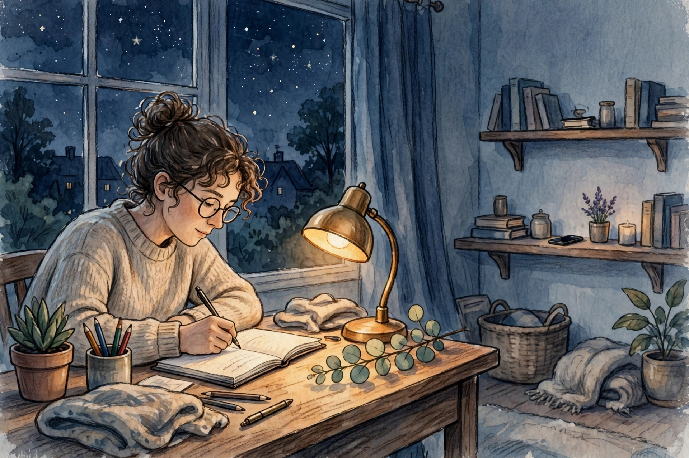
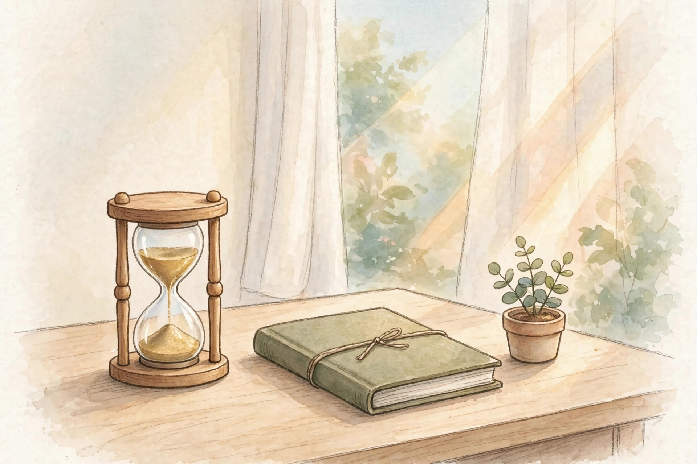

29 September 2026
Fokus di Era Distraksi
Bukan kamu yang lemah. Otakmu cuma sedang dilatih oleh benda di sakumu untuk tidak pernah diam — dan kabar baiknya, latihan itu bisa dilawan balik.

Kenapa fokus terasa makin langka
Coba ingat terakhir kali kamu baca sesuatu sampai selesai tanpa menyentuh HP. Bukan scroll berita sambil baca — beneran baca, satu teks, dari awal sampai akhir. Buat banyak orang, jawabannya: udah lama banget, atau bahkan nggak ingat kapan.
Ini bukan salahmu sepenuhnya. Setiap notifikasi, setiap badge merah, setiap video 15 detik dirancang oleh tim yang dibayar mahal dengan satu tujuan: mencuri perhatianmu sedetik lebih lama dari aplikasi sebelah. Otakmu bukan rusak — dia cuma merespons persis seperti yang dirancang oleh orang-orang itu.
Hasilnya: kita hidup dalam keadaan setengah hadir. Kerja sambil cek chat. Nonton sambil scroll. Ngobrol sambil lirik layar. Perhatian kita terpecah jadi remah-remah, dan anehnya kita mulai menganggap itu normal.
Kenalan sama dua konsep sederhana
Ada dua istilah yang berguna banget buat memahami apa yang terjadi di kepalamu:
Deep work vs shallow work. Deep work itu kerja yang butuh otak penuh — nulis, mikir strategi, belajar hal baru, menyelesaikan masalah rumit. Shallow work itu yang bisa dikerjakan sambil setengah sadar — balas email pendek, rapikan file, cek notifikasi. Masalahnya, hari-hari kita makin penuh shallow work, dan deep work-nya makin nggak dapat jatah.
Attention residue. Ini yang paling jahat. Setiap kali kamu pindah tugas — misalnya lagi nulis lalu cek WhatsApp sebentar — sebagian perhatianmu tertinggal di tugas sebelumnya. Jadi pas balik nulis, otakmu belum 100% kembali. Pindah-pindah tugas 20 kali sehari berarti 20 kali otakmu jalan dengan kapasitas setengah. Capek, tapi hasilnya sedikit.
Teknik praktis yang langsung bisa dipakai
Nggak perlu aplikasi mahal atau retreat ke gunung. Empat teknik ini cukup:
1. Blok waktu fokus. Pilih satu tugas, pasang timer, kerjakan sampai timer bunyi. Yang populer: 25 menit kerja + 5 menit istirahat (teknik Pomodoro), atau 50 menit + 10 menit istirahat kalau kamu sudah agak terlatih. Selama timer jalan, tidak ada "sebentar cek ini".
2. Nyalakan mode Jangan Ganggu. Serius, fitur ini ada di semua HP dan jarang dipakai. Nyalakan selama blok fokus. Kabar buruknya: nggak ada yang darurat. Kabar baiknya juga sama: nggak ada yang darurat.
3. Atur ulang notifikasi sekali, nikmati selamanya. Matikan notifikasi untuk semua aplikasi kecuali yang benar-benar butuh respons cepat (telepon, mungkin chat keluarga). Sisanya? Kamu yang buka aplikasinya saat kamu siap, bukan aplikasinya yang manggil kamu.
4. Satu tab, satu tugas. Di laptop: tutup semua tab yang nggak berhubungan dengan tugas sekarang. Di HP: keluar dari aplikasi sosial media setelah dipakai, jangan dibiarkan nongkrong di background menggoda. Lingkungan digital yang bersih = godaan yang lebih sedikit.
Desain lingkungan, bukan andalkan tekad
Tekad itu sumber daya yang cepat habis. Lingkungan yang baik bekerja bahkan saat tekadmu nol. Tiga perubahan kecil dengan efek besar:
HP di luar jangkauan tangan. Bukan di mode silent di samping keyboard — tapi di tas, di laci, atau di ruangan lain. Penelitian berulang menunjukkan sekadar keberadaan HP di meja menurunkan kapasitas kognitif, bahkan saat HP-nya mati. Jarak fisik = jarak mental.
Meja (atau tempat kerja) bersih sebelum mulai. Meja berantakan = otak berantakan, itu bukan sekadar pepatah. Luangkan 2 menit untuk bereskan: singkirkan yang nggak perlu, siapkan yang perlu — air minum, catatan, alat kerja. Dua menit persiapan ini menyelamatkan 20 menit distraksi nanti.
Siapkan "pintu masuk" tugas. Alasan paling umum menunda mulai adalah nggak tahu harus mulai dari mana. Sebelum blok fokus dimulai, tulis satu kalimat: "Langkah pertama yang kulakukan adalah ___." Kalimat itu jadi jembatan — kamu nggak perlu mikir lagi, tinggal jalan.

Latih fokus seperti otot
Fokus itu bukan bakat, dia otot. Dan seperti otot, dia tumbuh kalau dilatih bertahap, bukan dipaksa marathon di hari pertama.
Mulai dari 15 menit. Iya, cuma 15 menit fokus penuh tanpa gangguan. Kalau itu terasa berat, itu justru bukti kamu butuh latihan ini. Bertahanlah 15 menit selama beberapa hari, lalu naikkan ke 20, 25, 30. Dalam sebulan, 50 menit fokus akan terasa wajar.
Yang penting bukan durasinya, tapi kemurniannya. 15 menit yang benar-benar tanpa gangguan jauh lebih berharga daripada 2 jam yang diselingi 30 kali cek HP.
Kalau harimu gagal fokus
Akan ada hari di mana semuanya berantakan. Timer dipasang, HP tetap dicek. Blok fokus direncanakan, yang dikerjakan malah scroll. Itu normal, dan itu bukan bukti kamu gagal sebagai manusia.
Yang membedakan orang yang akhirnya bisa fokus dengan yang menyerah bukan kesempurnaan — tapi cara mereka memperlakukan hari yang buruk. Jangan hukum diri sendiri ("dasar nggak disiplin"). Jangan juga menyerah total ("yaudahlah, besok aja"). Cukup catat: apa yang mengganggu hari ini? Notifikasi? Tugasnya terlalu besar? Kurang tidur? Lalu perbaiki satu hal kecil untuk besok.
kemajuan itu bukan garis lurus — dia zigzag yang arah umumnya ke atas
Ingat: kamu sedang melatih ulang otak yang sudah bertahun-tahun dilatih untuk terdistraksi. Butuh waktu. Bersabarlah sama dirimu sendiri seperti kamu bersabar sama teman yang sedang belajar.
Checklist harian
Tempel ini di tempat yang terlihat. Lima kotak, centang setiap hari:
- Satu blok fokus selesai — minimal 25 menit, tanpa gangguan, untuk satu tugas penting.
- HP jauh saat kerja — di luar jangkauan tangan selama blok fokus.
- Notifikasi tidak berkuasa — mode Jangan Ganggu nyala saat fokus; tidak ada "cek sebentar".
- Satu tugas selesai, bukan lima tugas setengah — utamakan selesai atas sibuk.
- Maafkan satu kegagalan kecil — kalau hari ini berantakan, catat gangguannya, lanjutkan besok.
Fokus bukan tentang menjadi robot yang produktif 24 jam. Dia tentang merebut kembali perhatianmu dari semua yang berusaha mencurinya — supaya waktu dan energimu dipakai untuk hal yang benar-benar kamu pilih. Mulai kecil, mulai hari ini, mulai dari 15 menit.